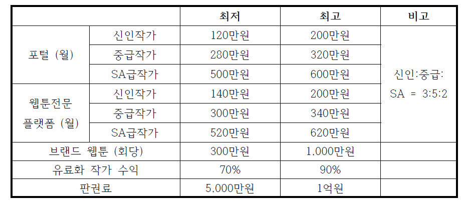
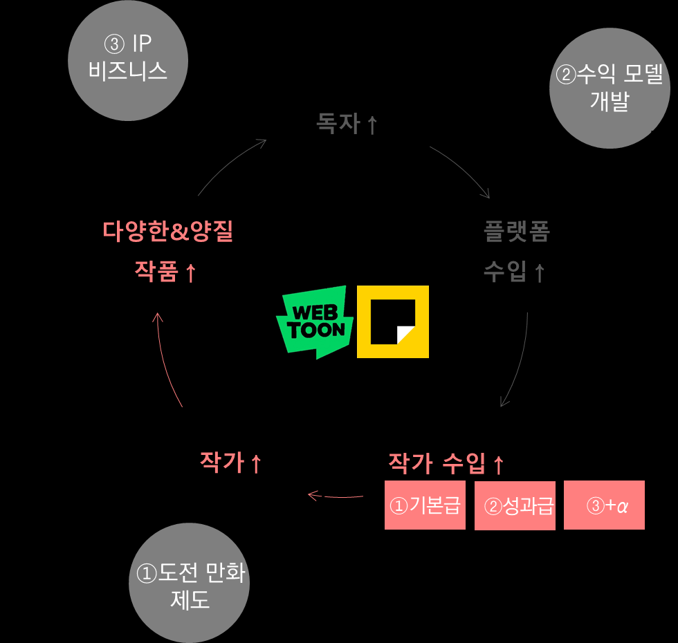
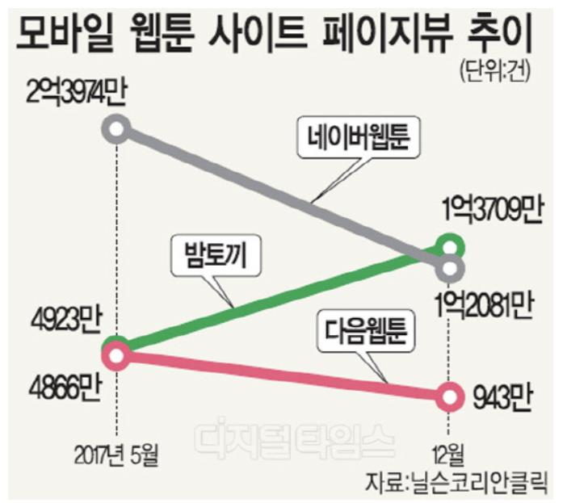
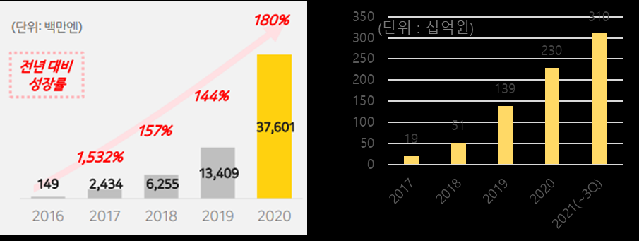

'2019년 네이버웹툰 작가 평균 연수입 3억 1천만원', '2020년 네이버+카카오 웹툰 전세계 거래액 1조 3천억원', '2020년 초등학생 희망 직업 9위, 웹툰 작가'. 네이버와 카카오는 쇠락의 길에 들어선 만화산업에 뛰어들어 웹툰이라는 새로운 비즈니스를 창출했다. 본 연구는 2000년대 초반까지는 존재조차 하지 않았던 웹툰 비즈니스가 어떤 혁신을 통해 네이버와 카카오의 대표 수익 사업으로 성장할 수 있었는지를 플랫폼 비즈니스 이론과 Flywheel Effect로 분석하고, 우리나라 웹툰 비즈니스의 글로벌 성공 가능성을 살펴본다.
- 네이버와 카카오는 쇠락의 길에 들어선 만화산업에 뛰어들어 웹툰이라는 새로운 비즈니스를 창출했다. 이 혁신의 핵심에는 플랫폼 비즈니스와 도전 만화(아마추어 게시판), 유료 사업화(부분 유료 과금 모델), IP 비즈니스로의 확장이 있다.
- 플랫폼 비즈니스 성공의 기반에는 Flywheel Effect가 있다. 웹툰 플랫폼은 다면 시장, 교차면 네트워크 효과, 닭과 달걀의 문제라는 특징에 기반해 '다양한&양질의 작품 증가→독자 증가→플랫폼 수입 증가→작가 수입 증가→작가 증가→다양한&양질의 작품 증가'라는 Flywheel을 가진다.
- 포털 출신 웹툰사는 '작가/작품 지속 확보'에 집중했고, 웹툰 비즈니스의 혁신들은 Flywheel을 운동시키는 추진력으로 작용해 작가 수입 증가에 기여했다. 도전 만화 제도로 단시간에 많은 작가와 작품을 확보했고, 고료제는 인기와 무관한 고정 수입으로 작가의 가계 안정화에 기여했다.
- 부분 유료화·웹툰 광고 등 수익 모델 개발로 작가가 성과에 따라 연간 억대 수입을 얻을 수 있는 구조가 마련됐으며, IP 비즈니스를 통한 2차저작물로 작가는 추가 수입을 얻고 2차저작물의 성공이 다시 웹툰 조회수를 높여 또 한번 수익을 창출했다.
- 본 Flywheel은 작가수, 작품수, 독자수, 플랫폼 매출에 대한 실제 데이터를 통해 작동하는 것으로 검증되었다.
1. 연구 배경 및 목적
웹툰은 우리나라를 종주국으로 하는 디지털 코믹스의 한 장르로, 한국의 웹툰은 이미 세계 100여개국에서 스마트폰 만화 App 1위를 차지하고 있다. 네이버, 카카오 등 유명 웹툰 플랫폼에 작품을 연재하는 웹툰 작가의 평균 수입은 3.1억원으로 대기업 임원 연봉(미등기임원 기준 3.6억원)에 못지않으며, 스위트홈, 승리호 등 웹툰을 원작으로 한 드라마와 영화가 넷플릭스 콘텐츠 인기 순위 1위를 기록했다. 모바일에서 웹툰 이용 시간은 OTT와 유사하고, 이용 빈도나 주간 이용자 유지율에서는 이미 OTT를 앞질렀다. 유료 결제 측면에서는 존재감이 더욱 도드라져, 2021년 9월 국내 iOS App 매출 순위에서 게임을 제외하면 웹툰 관련 App이 점유율 40%로 가장 많다.
2. 이론적 배경
2.1 플랫폼 비즈니스
플랫폼 비즈니스는 서로 거래하기 힘들었던 다른 유형의 참가자(생산자, 소비자 등)를 연결시키고 상호작용을 촉진시킴으로써 가치를 창출하는 비즈니스다. 본 논의는 그 중 다면 시장(Multi-side Market), 교차면 네트워크 효과(Cross-side Network Effect), 그리고 상호 의존성이 있는 참가자 집단 중 어느 쪽을 먼저 끌어들일지를 결정해야 하는 닭과 달걀 문제(Chicken-Egg Problem)와 관련성이 크다.
2.2 Flywheel Effect
Flywheel은 동력 없이 관성만으로 회전운동을 하는 자동차 부품으로, 최초 운동을 만들어 내기 위해서는 큰 추진력이 필요하지만 한번 가속도가 붙으면 저절로 돌아간다. Jim Collins는 2001년 저서 'Good to Great'에서 이 원리를 경영학에 도입했고, 아마존의 Jeff Bezos는 여기서 영감을 얻어 '저렴한 가격→고객 유입→판매자 입점→선택지 확대→규모의 경제→더 저렴한 가격'으로 이어지는 Virtuous Cycle을 아마존 비즈니스 모델의 기본 전략으로 삼았다.
3. 웹툰과 웹툰 산업의 이해
3.1 웹툰 비즈니스의 특징과 혁신
기존 디지털 코믹스가 출판만화의 형식과 틀을 그대로 따랐던 것에 반해, 웹툰은 스마트폰에 최적화된 규격과 세로 스크롤, 연속적인 컷 사용 등 독특한 형식과 창작법을 만들어냈다. 비즈니스 측면에서 원문은 웹툰의 대혁신을 '만화 시장에 플랫폼 비즈니스 도입'으로, 세부 혁신 포인트를 ① 도전 만화 제도 도입으로 단시간에 다량/양질의 웹툰 작품 확보, ② 부분 유료화 과금 모델 개발로 유료 사업화 성공, ③ 웹소설-웹툰-영화/드라마의 사업적 연계로 IP 비즈니스 적극 개발, ④ 국내 성공 비즈니스 모델의 신속한 글로벌 이식으로 정리한다.
부분 유료화 모델 중 가장 널리 알려진 것은 카카오의 '기다리면 무료'로, 모바일 게임 애니팡의 하트 시스템에서 착안했다. 일정 시간마다 한 편씩 무료로 제공하되 기다리지 않고 바로 다음 편을 보려면 유료 결제를 하는 방식으로, 무료로 볼 수 있는 방안을 남겨둠으로써 큰 거부감 없이 시장에 자리 잡았다. 이 모델은 웹툰의 장르적 특성에도 영향을 미쳐, 현재 일반적인 웹툰 한 편의 분량은 70컷 정도로 출판만화 1권 분량이 10여 편 이상으로 쪼개져 연재되며 편당 가격은 200~300원으로 낮게 책정됐다.
3.2 시장 규모와 주요 기업
국내 만화 시장은 2019년 9,540억원 규모로 2007년부터 CAGR 4.5%로 지속 성장하고 있는데, 출판만화가 정체 상태인 반면 디지털 코믹스(비율 42.2%)가 CAGR 18.4%로 빠르게 성장하며 전체 시장을 이끌고 있다. 세계 최고의 만화 강국 일본에서도 1990년대 중반부터 쇠락하던 만화 시장이 2014년부터 디지털 코믹스의 급성장(CAGR 25.2%)으로 반등했다. 국내 웹툰 시장은 연간 PV 기준 네이버웹툰이 65.1%로 독보적 1위, 카카오(카카오페이지+카카오웹툰)가 19.5%로 2위를 차지하며 포털 출신 두 플랫폼이 전체 PV의 84.6%를 점유한다. 2020년 기준 네이버웹툰의 전세계 거래액은 8,200억원(매출 3,609억원), 카카오웹툰의 전세계 거래액은 7,694억원(매출 5,280억원)이다.
4. 웹툰 플랫폼의 성장 전략: Flywheel Effect
4.1 포털사 웹툰 플랫폼의 고민
웹툰 플랫폼에서 닭과 달걀은 양질의 웹툰과 이를 소비할 많은 독자다. 포털 사업에서 이미 강력한 지위를 확보하고 있던 네이버와 카카오는 포털 첫 페이지에 웹툰 코너를 배치하는 것만으로 독자를 비교적 쉽게 끌어올 수 있었다. 하지만 독자는 재미를 느끼지 못하면 쉽게 떠나고 쉽게 돌아오지 않는다.
웹툰은 스토리를 구상하는 창의력과 이를 그림으로 구현하는 노동력을 함께 요구하는 노동집약적인 상품이다(웹툰 작가의 일 평균 창작활동은 10.5시간, 주중 평균 5.8일). 작가가 웹툰을 지속 연재하려면 작품활동만으로 생계를 꾸릴 수 있어야 하고, 웹툰으로 높은 수입을 얻을 수 있다면 수요-공급의 원리에 의해 작가는 자연스럽게 늘어난다. 이렇게 만들어지는 '작가 수입↑ → 작가↑ → 다양한&양질 작품↑ → 독자↑ → 플랫폼 수입↑ → 작가 수입↑'의 사이클이 웹툰 플랫폼 비즈니스의 기본 원리, Flywheel이다.
4.2 첫번째 추진력: 도전만화 제도와 고료제(기본급)
네이버는 2006년 아마추어 작가들이 자유롭게 작품을 올릴 수 있는 '도전 만화가' 코너를 만들고 실력이 검증된 아마추어를 프로 작가로 발굴·데뷔시키면서 단기간에 양질의 작품을 다수 확보했다. 유명 작가의 문하생으로 들어가 수년간 수련하는 도제 방식이 주류였던 출판만화와 달리, 모든 아마추어의 작품을 최종 소비자인 독자가 바로 평가하고 좋은 반응을 얻은 작품을 정식 연재로 발탁한 것이다. 2014년 6월 기준 네이버 도전만화에는 총 139,789명이 작품을 올렸고 그 중 175명이 정식 등단해 당시 정식 연재 작가 365명의 약 절반(47.9%)을 차지했다. '마음의 소리'(누적 70억 뷰) 조석, '신의 탑'(45억 뷰) 이종휘(필명 SIU) 등이 이렇게 발굴됐다.
여기에 포털은 정식 연재 작가와 고료 계약을 맺어 작품의 인기와 무관하게 매월 고정 수입을 지급했다. 2009년 신인 작가의 월 고료는 40만~80만원 선으로 당시 최저생계비(1인 가구 49만원)를 겨우 웃도는 수준이었지만, 웹툰 트래픽이 증가하면서 2014년에는 120만~200만원으로 2.5~3배가량 높아져 주 1회 연재로도 보다 안정된 생활이 가능해졌다.

4.3 두번째 추진력: 수익 모델 개발과 Revenue Sharing(성과급)
2013년부터 본격 도입된 부분 유료화 수익 모델과 다양한 웹툰 광고 개발은 작가가 성과에 따른 고수입을 얻을 수 있는 기회를 열어주었다. 작가들은 정액 고료뿐 아니라 자신의 웹툰에 대한 유료 결제액의 일부를 배분받게 되었는데, 네이버와 카카오의 경우 작가와 플랫폼이 유료 결제액을 5.5:4.5~9:1의 비율로 나눈다고 알려져 있다. 네이버는 부분 유료화 직전 웹툰 페이지 내 광고 수익을 작가와 나누는 PPS(Page Profit Sharing) 제도를 공개했고, 2013년 6월 작가들의 월 평균 PPS 수입이 255만원이라고 밝혔다. 인기 웹툰 '외모지상주의'의 박태준 작가는 웹툰 광고 수익만으로 월 1,000만원을 벌었다고 밝히기도 했다. 회당 평균 50만 조회수 작품의 월 R/S 수익을 시뮬레이션하면 약 1천8백만원 수준이다. 실제로 2019년 네이버는 자사 플랫폼 전체 작가의 연평균 수익이 3.1억원, 신인 작가(연재 1년 내)는 1.6억원이며, 전체 작가의 62%인 221명이 연 1억원 이상을 벌고 있다고 밝혔다.
4.4 세번째 추진력: IP 비즈니스와 저작권료(+α)
웹툰 플랫폼에 양질의 작품이 누적되면서 흥행이 검증된 웹툰을 원작으로 2차 저작물을 제작하려는 시도가 자연스럽게 일어났고, 플랫폼은 그 가치를 알아보고 직접 IP 사업에 뛰어들었다. 작가는 2차 저작물 창작을 허락하는 대가로 추가 노동 없이 저작권료라는 신규 수입(+α)을 얻는다. 2차 저작물의 성공은 다시 원천 웹툰의 조회수를 높인다. 인기 웹툰 '이태원 클라쓰'는 2018년 8월 누적 조회수 2.5억 뷰, 누적 구독자 7백만명으로 연재를 마쳤는데, 2020년 드라마가 최종화 시청률 17%를 기록하며 인기리에 종영한 후 누적 조회수와 구독자는 4억 뷰, 2천만명으로 2배가 되었고 누적 매출은 300% 이상 증가한 것으로 알려졌다. 2019년 네이버 연재 작가 중 상위 20인의 평균 수익(2차 저작물 관련 수익 포함)은 17.5억원이며, 2021년 네이버웹툰이 공개한 1위 작가의 연수입은 124억원에 달한다.

4.5 Flywheel 작동 검증: 작가·작품·독자·플랫폼 수입의 증가
데이터는 Flywheel의 작동을 뒷받침한다. 2003~2006년 연간 50편 이하에서 등락하던 신규 웹툰은 네이버가 도전 만화 제도를 본격화한 2006년 이후 연평균 41.7%(2006~2012년)로 증가했고, 유료 결제 R/S와 광고 R/S가 도입된 2013년에는 신규 작품수가 382개로 전년(194개) 대비 2배가 되었으며 2016년까지 연평균 72.8%로 가파르게 증가했다. 신규 작가수도 신규 웹툰수와 유사한 추이를 보인다. 웹툰 작가와 작품의 수는 작가의 기대 수입이 상승할 수 있는 구조가 더해질 때마다 변곡점을 그리며 함께 증가한 것이다.
역설적으로 Flywheel의 중요성은 위기 국면에서도 증명됐다. 2016년 10월부터 국내 웹툰 9만여 편을 불법 게재한 '밤토끼'로 인해 합법 플랫폼의 독자 트래픽과 유료 결제가 눈에 띄게 감소하자 2017년 신규 작품·작가수가 크게 줄었다. 밤토끼의 트래픽이 145% 증가하는 동안 네이버와 카카오(다음)의 PV는 각각 43%, 81% 감소했고, 한 작가는 연재 초 1,400만원이던 월 매출이 250만원으로 줄었다고 밝혔다. 작가의 수입을 보장하는 것이 작가와 양질의 작품을 다수 확보하는 데 얼마나 중요한지 보여주는 사례다.

독자와 플랫폼 수입도 함께 늘었다. 네이버웹툰의 MAU는 2010년 5백만명에서 2020년 전세계 7,200만명으로 14배 증가했고, 2020년 네이버의 웹툰 매출은 3,609억원(전체 매출의 6.8%), 카카오는 5,280억원(전체 매출의 12.7%)으로 웹툰은 양사의 핵심 비즈니스로 자리잡았다.
5. 글로벌 사업 전략
네이버와 카카오는 국내에서 성공한 웹툰 비즈니스 모델을 기반으로 글로벌 시장에 빠르게 진출해 웹툰이라는 새로운 시장을 스스로 창출하고 선점해 나가고 있다. 선점 효과(First Mover's Advantage)와 교차 네트워크 효과를 강화하도록 설계된 세 가지 전략이 있다. 첫째, 신속한 글로벌 진출이다. 네이버는 부분 유료화로 비즈니스 모델이 정립된 직후인 2014년, 웹툰 플랫폼 사업이 돈이 된다는 걸 확인한 순간 지체 없이 해외시장에 진출해 강력한 글로벌 플랫폼에게 시장에 진입할 틈을 주지 않았다. 둘째, 기존 성공 요소의 적극 활용이다. 해외판 도전만화인 CANVAS에는 매일 1천개 수준의 에피소드가 업로드되며 2020년 기준 전세계 58만여 명의 아마추어 창작자와 1,600여 명의 전문 창작자가 활동하고 있다. 2016년 픽코마로 일본에 진출한 카카오는 '기다리면 무료' 모델을 그대로 이식해 2018년 먼저 진출한 네이버 라인망가를 제치고 1위에 올랐다. 셋째, 글로벌용 신규 추진력으로 국내 인기 웹툰의 현지어 번역(여신강림은 8개 언어로 서비스되며 여러 나라에서 인기 최상위권), 그리고 왓패드(네이버, 2021년 1월, 북미 1위 웹소설 플랫폼)·타파스·래디쉬(카카오, 2021년) 등 현지 플랫폼 인수를 통해 독자와 작품을 빠르게 확보했다.
성과는 뚜렷하다. 10개 언어로 서비스 중인 네이버웹툰은 2019년부터 전세계 100여개국에서 모바일 만화 앱 1위를 지키고 있으며 2021년 3분기 처음으로 글로벌 월평균 거래액 1천억원을 돌파했고, 마블과 DC가 자사 전용 플랫폼이 있음에도 블랙위도우·샹치·배트맨의 오리지널 콘텐츠를 네이버웹툰에 연재하기로 했다. 카카오 픽코마는 2021년 3분기 전세계 비게임 App 매출 6위로, 틱톡·유튜브·디즈니+ 등과 어깨를 나란히 하는 10위 내 유일한 국내 기업 서비스다.

6. 요약 및 연구 의의와 한계
- Flywheel의 핵심은 작가 수입: 단계별 비즈니스 모델 혁신(도전 만화 제도, 부분 유료화 수익 모델, IP 비즈니스)은 작가 수입을 기본급+성과급+α 구조로 향상시켰고, 이것이 좋은 작가와 양질의 작품의 지속 공급이라는 연쇄작용의 첫걸음이 되었다.
- 글로벌 성공 가능성 확인: 신속한 진출로 시장을 선점하고 국내 성공 요소를 이식하며 현지어 번역·현지 플랫폼 인수라는 새 추진력을 더한 전략으로, 네이버는 100여개국 만화 App 1위, 카카오 픽코마는 전세계 비게임 App 매출 6위에 올랐다.
- 연구 의의: 웹툰 사업은 국내용에 그치던 우리나라 플랫폼 비즈니스가 글로벌에서도 경쟁력을 가질 수 있다는 것을 보여주는 의미 있는 사례이며, 개별 콘텐츠의 일회성 성공을 넘어 플랫폼 기반의 산업 생태계 구축 가능성을 보여준다.
- 연구 한계: 각 플랫폼별 연도별 작가수·작품수·독자수·작가 수입 등의 데이터는 확보할 수 없어, 해당 데이터가 있었다면 Flywheel의 효과성을 보다 면밀하게 살펴볼 수 있었을 것이다.